HIST 270 · History of China · Chapter 14 · Lecture 1
From Beggar Monk to Autocrat
A Beggar Monk Founded the Ming and Built a Throne for Giants
1368–1644 · Study Buddy edition
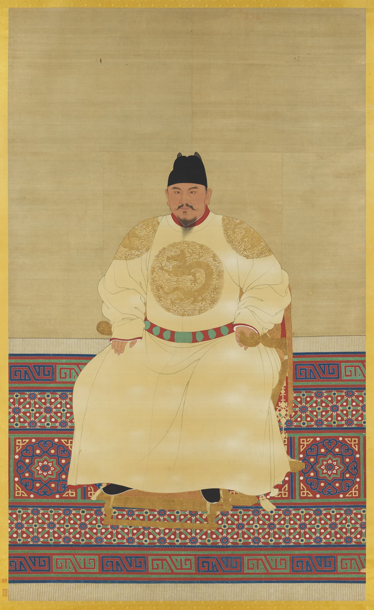
Seated portrait of Ming Taizu, the Hongwu emperor, hanging scroll, ink and color on silk, Ming court painting. National Palace Museum, Taipei. Public domain, Wikimedia Commons.
Q1 story · Anhui · 1340s
Drought and Plague Left Sixteen-Year-Old Zhu Yuanzhang with Three Bodies to Bury
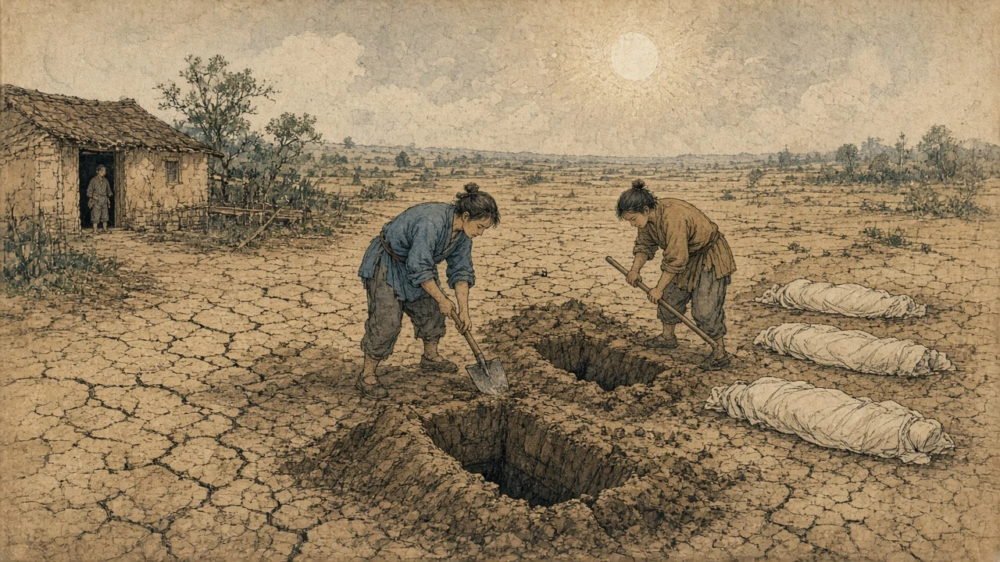
AI-generated illustration in a Ming woodblock-print style, made for this deck: two thin teenage brothers dig graves at the edge of a parched field while a neighbor watches from a mud-brick farmhouse. An interpretation, not a historical source.
Drought and then plague struck Zhu's home region in Anhui province in the 1340s.
When Zhu was sixteen, his father, his oldest brother and that brother's wife all died.
A neighbor let the two surviving boys bury them in his field, but they had no coffins and no food.
Sources: Ebrey, Ch. 14, p. 228.
Q1 story · Central China · 1340s
A Poor Monastery Took Zhu In, Then Sent Him Out to Beg
With no relatives to turn to, Zhu asked a Buddhist monastery to take him in as a novice.
The monastery was short of money, and within two months it sent him out to beg for food.
He wandered central China for three or four years and learned to read only after he returned.
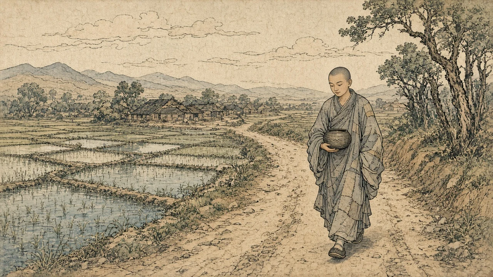
AI-generated illustration in a Ming woodblock-print style, made for this deck: a young shaven-headed novice with a begging bowl walks a long dirt road past villages and rice paddies. An interpretation, not a historical source.
Sources: Ebrey, Ch. 14, p. 228.
Q1 story · The Yuan in crisis · 1351
In 1351 the Red Turbans Rose, Promising a Buddha Who Would End Suffering
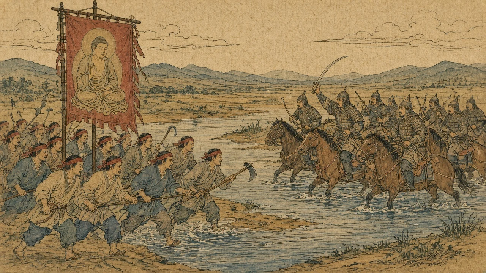
AI-generated illustration in a Ming woodblock-print style, made for this deck: peasant rebels in red headbands charge Mongol horsemen across a river plain under a Maitreya banner. An interpretation, not a historical source.
In 1351 a religious rebel movement called the Red Turbans rose against the Mongol Yuan dynasty.
Its members belonged to the White Lotus Society, which taught that the future Buddha, Maitreya, would soon bring paradise to earth.
The rebels won real victories, even defeating Mongol cavalry.
Sources: Ebrey, Ch. 14, p. 228.
Q1 story · Anhui · 1352
When Yuan Troops Burned His Temple, Zhu Joined the Rebels and Rose Fast
While fighting the rebels, Yuan soldiers burned down Zhu's monastery.
At twenty-four, Zhu joined the Red Turbans, whose leaders were also men of humble birth.
A commander let Zhu marry his daughter, and within a few years 20,000–30,000 men fought under him.
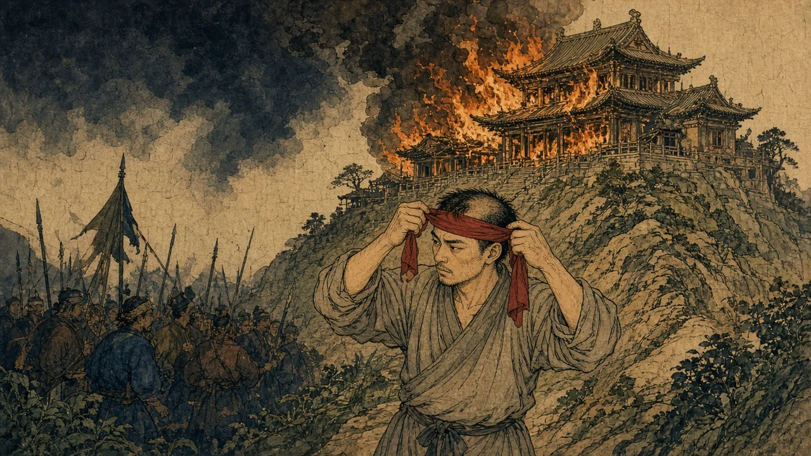
AI-generated illustration in a Ming woodblock-print style, made for this deck: a burning hillside monastery at night; in the foreground the young Zhu ties on a red headband. An interpretation, not a historical source.
Sources: Ebrey, Ch. 14, p. 228.
Q1 story · Nanjing · 1356
Educated Advisers Steered Zhu Away from the Sect, and He Made Nanjing His Base
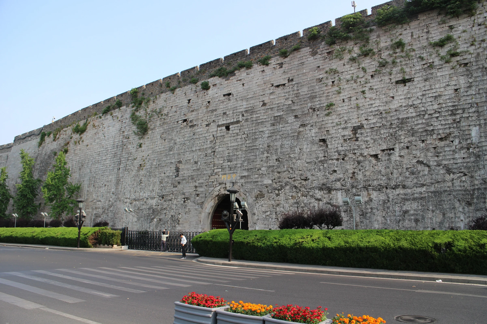
Zhonghua Gate, the main southern gate of the Ming city wall of Nanjing. The wall was built under Zhu Yuanzhang from the 1360s into the 1390s, after he took the city. Photo: Suicasmo, 2025. CC0, Wikimedia Commons.
Scholars joined Zhu because they thought he could win and hoped to shape his government.
They urged him to distance himself from the Red Turbans, whose religious beliefs educated men disliked.
In 1356 Zhu took Nanjing and kept his soldiers disciplined to win over local people.
Sources: Ebrey, Ch. 14, p. 228. Wall dates: Nanjing City Wall site information (outside the textbook).
Q1 story · Dadu and Nanjing · 1368
In 1368 Zhu Took the Yuan Capital and Founded the "Bright" Dynasty
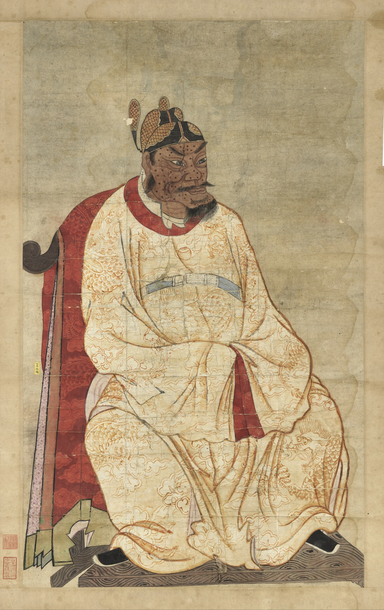
A very different portrait of Ming Taizu: seated portrait, version 4, hanging scroll, ink and color on paper, Ming dynasty. Compare it with the idealized court portrait on slide a. National Palace Museum, Taipei. Public domain, Wikimedia Commons.
Zhu's generals defeated rival warlords one after another.
In 1368 his army took the Yuan capital days after the Mongol emperor fled north.
Zhu, now forty, named his dynasty Ming, meaning "bright," and his reign Hongwu, "abundantly martial."
Taizu Counted Every Field and Household So Taxes Would Fall More Fairly
Taizu remembered how tax collectors had hounded his own parents.
He ordered a full registration of farmland and population across the empire.
Officials used the registers to share out taxes and labor service more fairly among households.
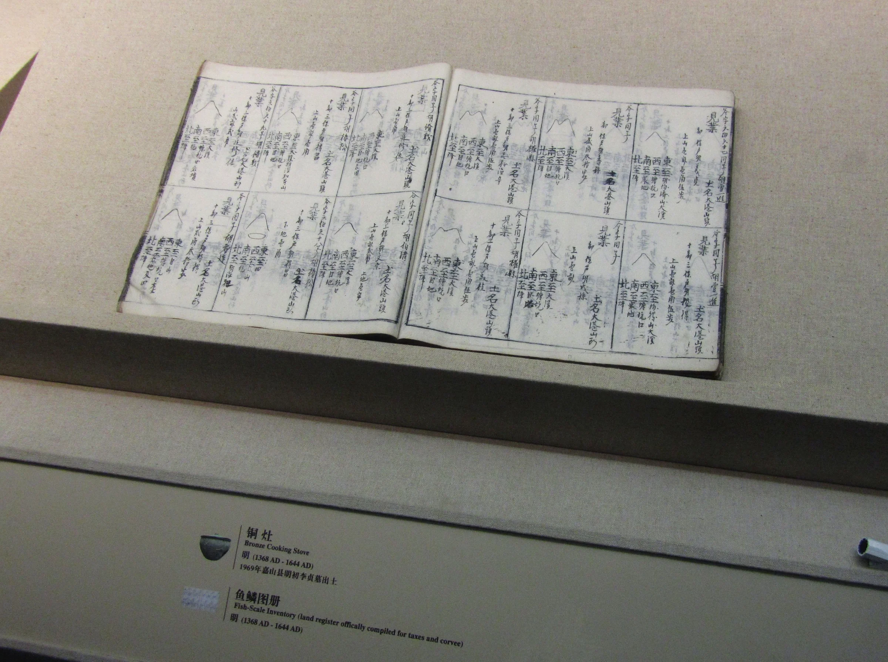
A Ming "fish-scale" land register (yulin tuce), a survey book that recorded plots of farmland for taxes and labor service. Anhui Museum. Photo: 猫猫的日记本, 2012. CC BY-SA 3.0, Wikimedia Commons.
Sources: Ebrey, Ch. 14, pp. 228, 240.
Q1 story · Nanjing and the villages · 1370s–1390s
Taizu Rewrote the Law and Told Villagers How to Behave
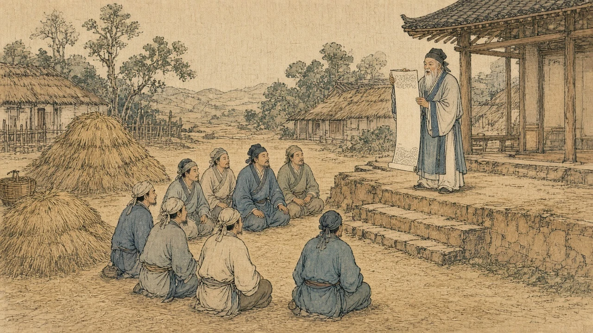
AI-generated illustration in a Ming woodblock-print style, made for this deck: a village elder reads an imperial proclamation aloud to kneeling villagers in a threshing yard. An interpretation, not a historical source.
Taizu had a new law code drafted and personally oversaw five revisions of it.
Experts compared each law with the old Tang code in front of him, but he made every final decision.
His instructions, read aloud in villages, told people to obey their parents, live in peace with neighbors, and avoid evil.
Sources: Ebrey, Ch. 14, p. 228.
Q1 story · Garrisons and workshops · 1368–1398
Taizu Made Soldiering and Craft Work Duties That Families Inherited
Taizu kept a Mongol practice: some families owed the state a soldier or craft work generation after generation.
A military household had to replace its soldier whenever he died, was injured, or deserted.
The Ming army reached about one million men, mostly stationed along the northern border and near the capital.
AI-generated illustration in a Ming woodblock-print style, made for this deck: a father hands his armor and spear to his son at a garrison gate while a clerk records the name. An interpretation, not a historical source.
Sources: Ebrey, Ch. 14, pp. 228–229.
Q1 story · The northern frontier · late 1300s
The Army Was Supposed to Feed Itself, but It Rarely Did
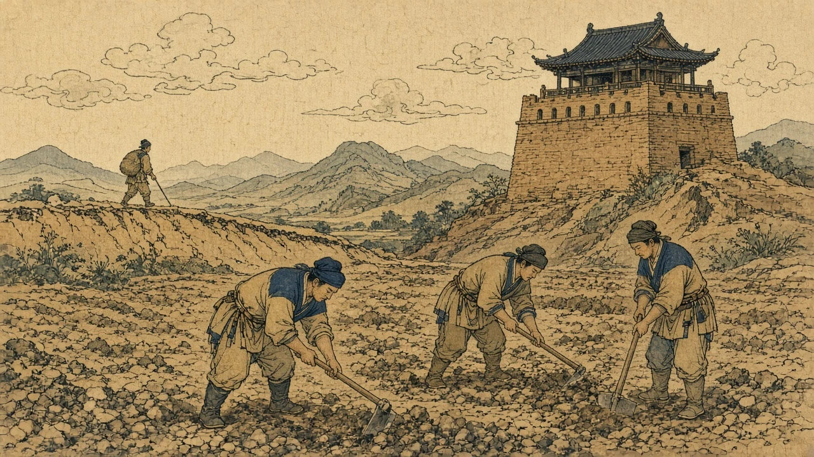
AI-generated illustration in a Ming woodblock-print style, made for this deck: soldiers hoe a dry frontier field beside a watchtower while one figure slips away over a ridge. An interpretation, not a historical source.
Each garrison received land that its soldiers farmed in turns to grow their own food.
In practice the garrisons were rarely self-sufficient.
Men forced to be soldiers often fought poorly, and desertion was hard to stop.
Sources: Ebrey, Ch. 14, p. 229.
Q1 story · Nanjing · 1376
Taizu Executed Thousands of Officials over a Paperwork Shortcut
Taizu distrusted educated men even though he needed them to run his government.
In 1376 officials were found to have taken a shortcut in handling grain-tax paperwork.
Taizu had thousands of them killed.
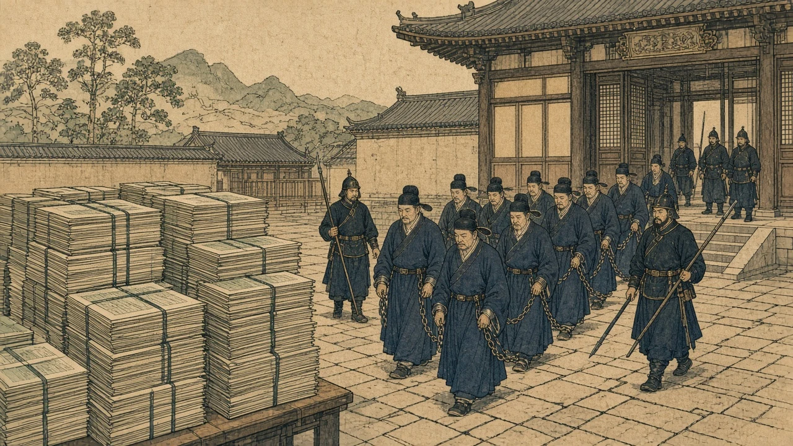
AI-generated illustration in a Ming woodblock-print style, made for this deck: officials in robes are led away in chains past stacks of tax ledgers in a government courtyard. An interpretation, not a historical source.
Sources: Ebrey, Ch. 14, p. 229.
Q1 story · Nanjing · 1380
In 1380 Taizu Accused His Chancellor of Treason and Abolished the Office
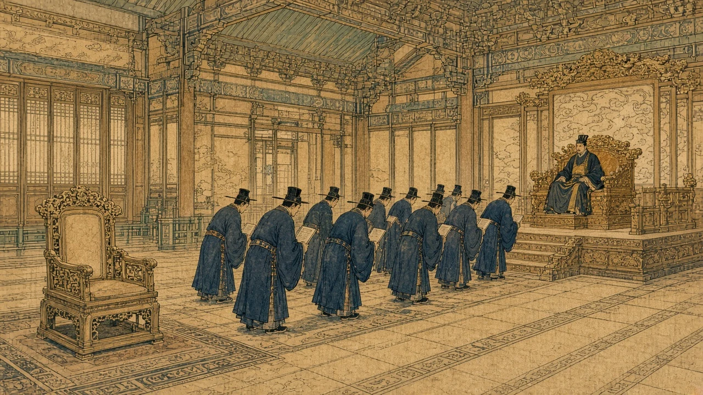
AI-generated illustration in a Ming woodblock-print style, made for this deck: an empty chancellor's chair stands in a vast hall while the emperor alone receives a line of ministers. An interpretation, not a historical source.
In 1380 Taizu decided that his chancellor, Hu Weiyong, was plotting to assassinate him.
Investigations went on for nearly ten years, and as many as 15,000 people were executed.
Taizu abolished the post of chancellor and dealt directly with every ministry himself.
Sources: Ebrey, Ch. 14, p. 229.
Q1 story · The palace in Nanjing · 1368–1398
Officials Knelt Before Taizu and Could Be Beaten in Open Court
Taizu required his officials to kneel when they spoke to him.
He did not hesitate to have officials beaten in front of the whole court.
His behavior was so erratic that historians think he probably suffered from a mental illness.
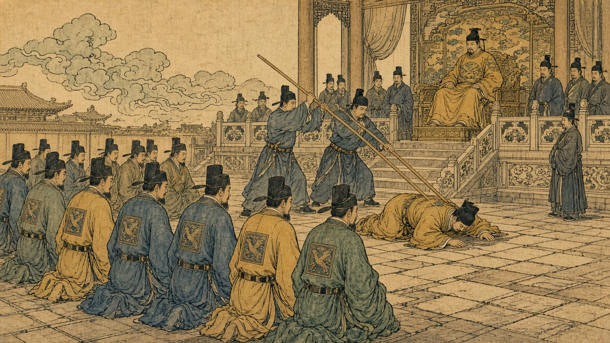
AI-generated illustration in a Ming woodblock-print style, made for this deck: rows of kneeling officials face the throne while guards raise bamboo rods over one prostrate man. An interpretation, not a historical source.
Sources: Ebrey, Ch. 14, pp. 228–229.
Q1 story · Nanjing · 1380s
Taizu Hunted for Hidden Insults and Made Refusing Office a Crime
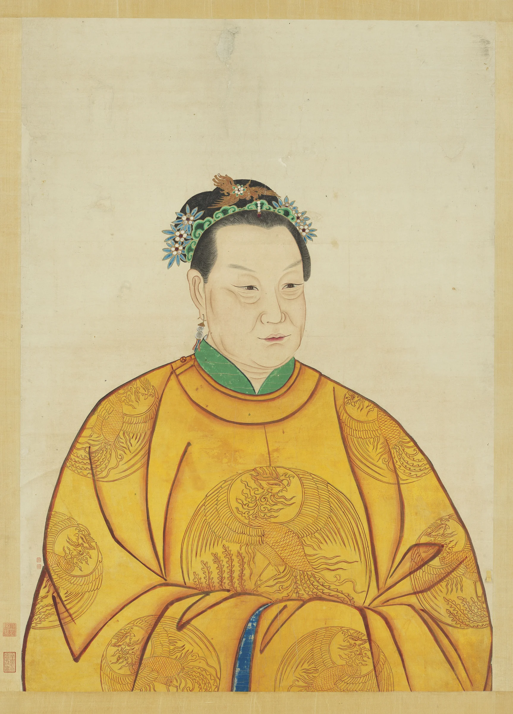
Portrait of Empress Ma (Empress Xiaocigao), Taizu's wife, who died in 1382. Hanging scroll, ink and color on paper, Ming dynasty. National Palace Museum, Taipei. Public domain, Wikimedia Commons.
As he learned to read better, Taizu suspected scholars of mocking him with words that sounded like "bandit" or "monk."
When educated men began avoiding government service, he made it illegal to refuse or resign an office.
Only Empress Ma could calm his rages, and after she died in 1382 no one could.
Sources: Ebrey, Ch. 14, p. 229.
Reading Guide · Review Question 1
Reading Guide · Review Question 1
Review Question 1
How did Zhu Yuanzhang's (Ming Taizu) impoverished background and rise through the Red Turbans shape his approach to governing and his treatment of the educated elite?
A strong answer links cause to effect: name a piece of Zhu's early life, then show the policy or attitude it helped shape. Treat governing and the educated elite as two separate parts.
AI-generated illustration in a Ming woodblock-print style, made for this deck: an old emperor on his deathbed reaches toward a young prince while armored uncles stand at the doorway. An interpretation, not a historical source.
Sources: Ebrey, Ch. 14, p. 229.
Q2 story · From Beijing to Nanjing · 1399–1402
Huidi's Uncle, the Prince of Yan, Took the Throne After Three Years of War
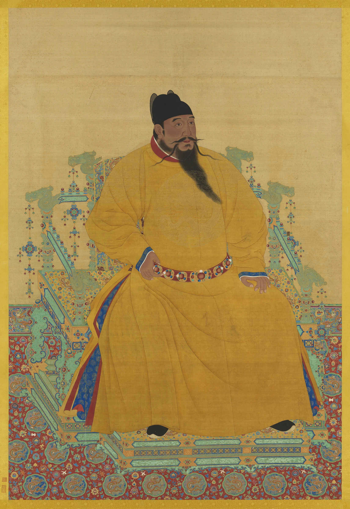
Seated portrait of Ming Chengzu, the Yongle emperor, hanging scroll, Ming court painting. National Palace Museum, Taipei. Public domain, Wikimedia Commons.
Almost at once, the Prince of Yan, Taizu's eldest surviving son by the empress, rebelled against his nephew.
He led his troops in person and won after three years of civil war.
He ruled as Chengzu, the Yongle emperor.
Sources: Ebrey, Ch. 14, pp. 229–230, 233.
Q2 story · Nanjing · 1402
Fang Xiaoru Refused to Write the Usurper's Proclamation, and Chengzu Destroyed Him
Many officials who had served Huidi refused to accept the new emperor.
The leading Confucian scholar Fang Xiaoru refused to write the proclamation of Chengzu's accession.
Chengzu had him executed, along with relatives and associates "to the tenth degree," tens of thousands of people.
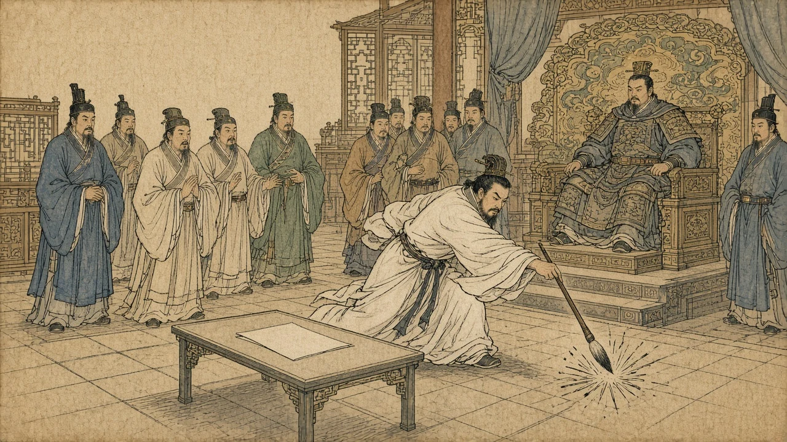
AI-generated illustration in a Ming woodblock-print style, made for this deck: a scholar in white mourning robes throws down his brush before the armored new emperor. An interpretation, not a historical source.
Sources: Ebrey, Ch. 14, p. 230.
Q2 story · Nanjing · early 1400s
The Same Emperor Put Two Thousand Scholars to Work on an Encyclopedia
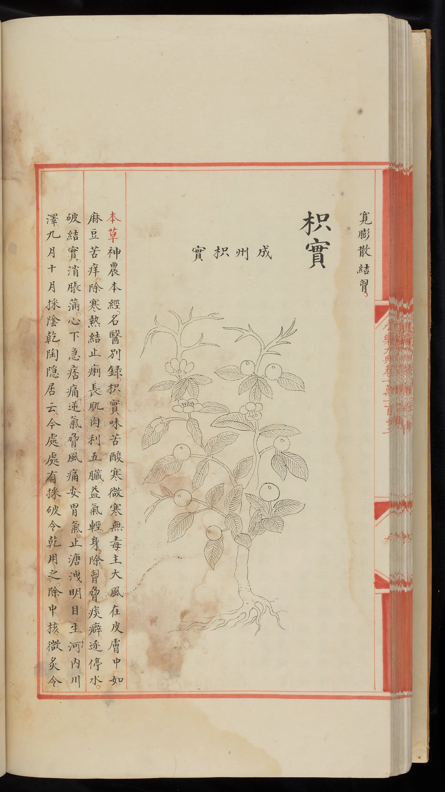
A page from the Yongle dadian (Yongle Encyclopedia). This volume is a copy made in 1562–1567; most of the encyclopedia is now lost. Chester Beatty Library, Dublin. Public domain, Wikimedia Commons.
Chengzu had 2,000 scholars compile a 22,938-chapter collection of knowledge drawn from 7,000 books.
He ordered a collection of Cheng-Zhu Confucian texts to help students prepare for the exams.
He also expanded and regularized the court's system for receiving foreign envoys.
Sources: Ebrey, Ch. 14, p. 230. Copy date: Chester Beatty Library record (outside the textbook).
Q2 story · The steppe and Vietnam · 1400s–1420s
Chengzu Fought in Person, from the Mongol Steppe to Vietnam
Chengzu, married to a leading general's daughter, often led troops into battle himself.
He won victories over the Mongols on the northern steppe.
In 1406 he invaded Vietnam, which the Ming held for only about two decades.
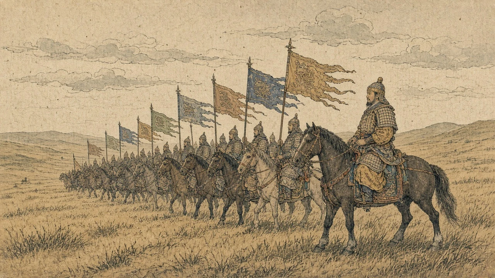
AI-generated illustration in a Ming woodblock-print style, made for this deck: the Yongle emperor on horseback reviews cavalry on an open grassland, banners streaming. An interpretation, not a historical source.
Sources: Ebrey, Ch. 14, pp. 229–230, 233.
Q2 story · Beijing · 1407–1420
Chengzu Built a New Capital at Beijing, His Old Base as a Prince
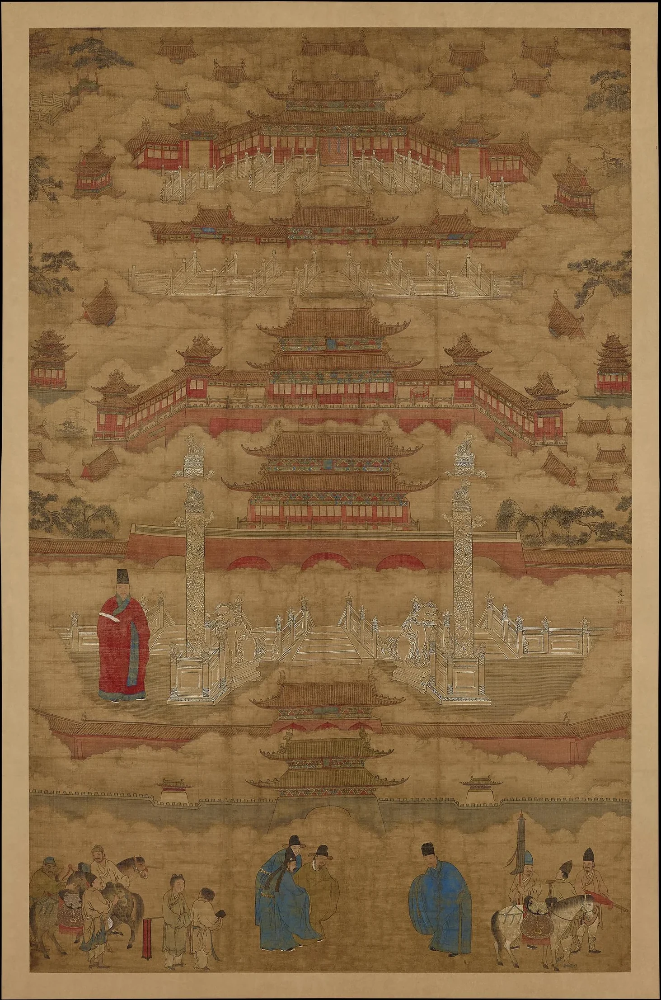
Portrait of an official in front of the Forbidden City, often called "The Imperial City of Beijing," hanging scroll attributed to Zhu Bang, ink and color on silk, 16th century. British Museum, 1881,1210,0.87. Public domain, Wikimedia Commons.
Chengzu moved the capital from Nanjing to Beijing, his base as a prince and the old Yuan capital.
Hundreds of thousands of workers built the city between 1407 and 1420.
Its outer walls stood forty feet high, ran nearly fifteen miles around, and had nine gates.
Sources: Ebrey, Ch. 14, p. 230. Scroll details: British Museum collection record.
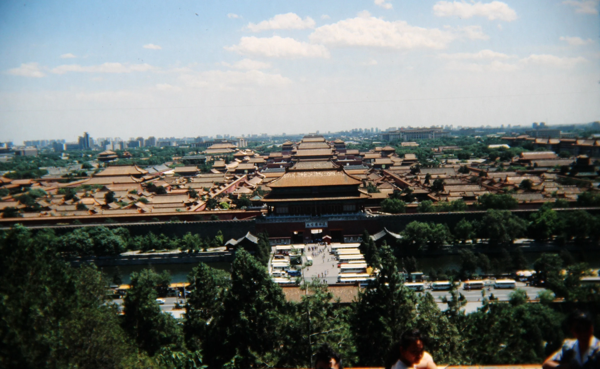
Q2 story · The Forbidden City · 1420
At Beijing's Center, the Forbidden City Was Built to Awe Everyone Who Entered
Beijing was planned as boxes within boxes: the outer city, the Imperial City, and the palace at the center.
The palace, called the Forbidden City, had close to 10,000 rooms.
Great audience halls stood on a north–south line, with vast courtyards where officials stood or knelt.
Sources: Ebrey, Ch. 14, p. 230.
The Forbidden City seen from Jingshan, looking south along the central axis. Photo: Gary Todd, 1991. CC0, Wikimedia Commons.
Q2 story · The Grand Canal · 1400s
Beijing Lived on Southern Grain Hauled Up the Grand Canal
The land around Beijing grew far less grain than the land around Nanjing.
Chengzu had the Grand Canal broadened, deepened, and fitted with more locks and dams.
15,000 boats and 160,000 transport soldiers pulling barges became the capital's lifeline.
Map of the modern course of the Grand Canal from Beijing to Hangzhou, close to the route Chengzu rebuilt. Map: Ian Kiu, CC BY 3.0, Wikimedia Commons.
Sources: Ebrey, Ch. 14, p. 230.
Reading Guide · Review Question 2
Reading Guide · Review Question 2
Review Question 2
Evaluate the monumental domestic achievements and ruthless political tactics of Chengzu (the Yongle emperor). How did his decision to move the capital to Beijing alter the empire's infrastructure?
Without a Chancellor, Emperors Turned to Junior Scholars as Secretaries
After Taizu abolished the chancellor in 1380 (recap: slide m, hu-weiyong-1380 ↩), emperors had no chief minister to run the government.
Junior scholars from the Hanlin Academy served as their secretaries and became a cabinet of "grand secretaries."
The grand secretaries had little administrative experience, which weakened them in dealing with the regular officials.
Before 1380
Emperor
↓
Chancellor
↓
Ministries
After 1380
Emperor
↓
Grand secretaries
Eunuchs
↓
Ministries
Diagram made for this deck from Ebrey, pp. 229–230. Eunuchs appear on the next slide.
Sources: Ebrey, Ch. 14, pp. 229–230.
Q3 story · The inner palace · 1400s–1500s
Grand Secretaries Had to Work with Palace Eunuchs, and Eunuch Power Grew
Eunuchs, castrated men who served inside the palace, helped manage the flow of paperwork to the emperor.
The grand secretaries had to cooperate with them, and some of the eunuchs' bad reputation rubbed off on them.
Eunuchs became as serious a problem under the Ming as under the late Han and late Tang.
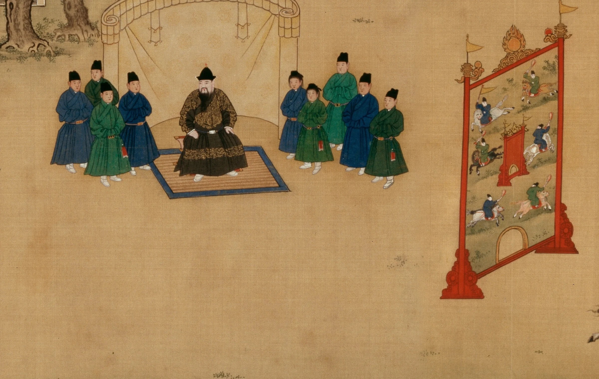
Detail of The Xuande Emperor's Pleasures (Zhu Zhanji xingle tu), handscroll, ink and color on silk, Ming court painting, 1400s. The emperor sits among palace attendants in court dress. Palace Museum, Beijing. Public domain, Wikimedia Commons.
A Rigid Succession Rule Put One Weak Emperor After Another on the Throne
Taizu ruled that the throne must pass to the empress's eldest son, or to that son's eldest son.
The rule gave the court no way to choose an able heir.
In Ming times one mediocre or erratic emperor followed another.
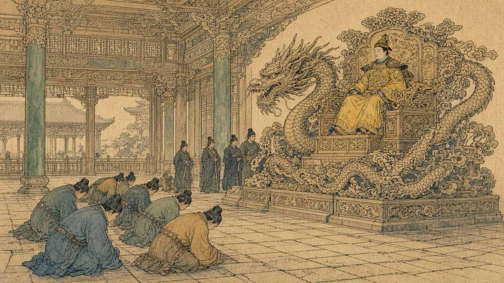
AI-generated illustration in a Ming woodblock-print style, made for this deck: an emperor sits alone on a dragon throne while officials kneel on the floor of a vast audience hall. An interpretation, not a historical source.
Sources: Ebrey, Ch. 14, p. 230.
Q3 story · The northern frontier · 1449
A Young Emperor Who Liked Playing Soldier Was Captured by the Mongols in 1449
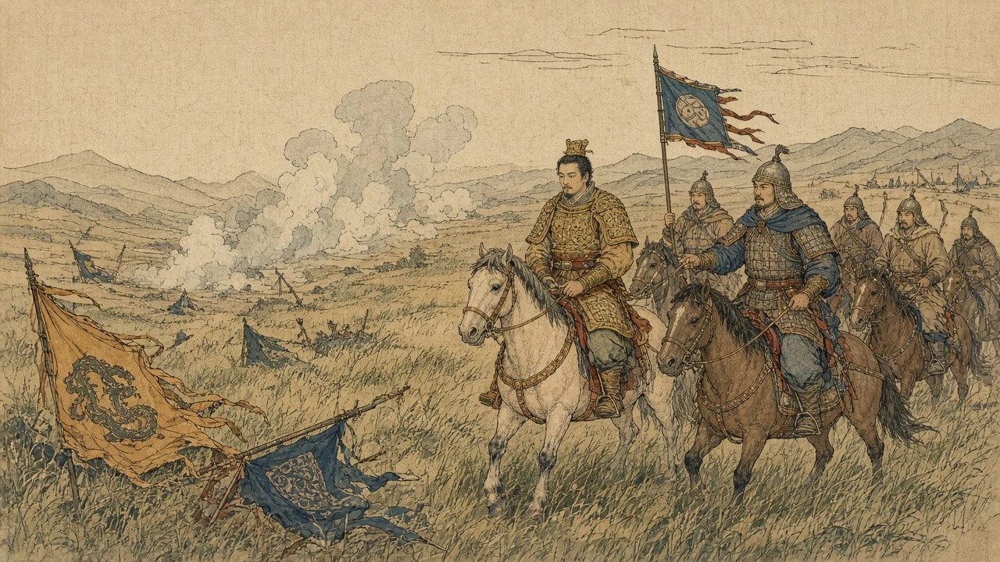
AI-generated illustration in a Ming woodblock-print style, made for this deck: a young emperor in armor rides across a smoky plain among horsemen, past fallen and broken banners. An interpretation, not a historical source.
Yingzong became emperor at eight and grew up loving to play soldier.
At twenty-one, urged on by his favorite eunuch, he led an army against the Mongols himself.
His 50,000-man army was destroyed and he was captured; the Mongols sent him back the next year.
Sources: Ebrey, Ch. 14, pp. 230, 233.
Q3 story · The palace · 1465–1567
The Next Emperors Let Favorites Rule, Drank, or Raged
Xianzong let a palace lady nearly twenty years older control him, and she had his children by other women killed.
Wuzong defied court customs and spent much of his time drunk.
Shizong raged at his palace women so cruelly that a group of them tried to murder him in 1542.
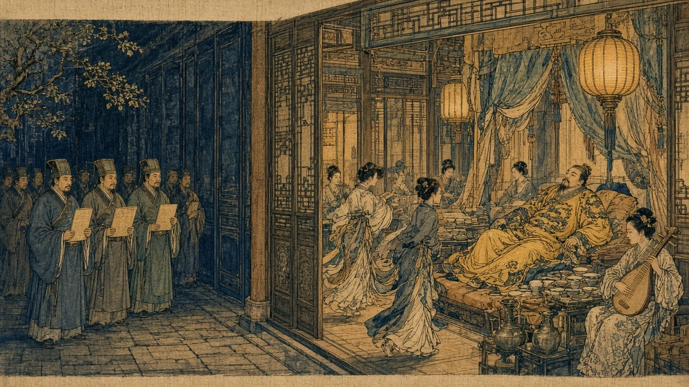
AI-generated illustration in a Ming woodblock-print style, made for this deck: an emperor lounges among palace ladies in a lantern-lit inner chamber while officials holding documents wait outside. An interpretation, not a historical source.
Sources: Ebrey, Ch. 14, p. 230.
Q3 story · Beijing · 1565
In 1565 Hai Rui Told the Emperor He Had Failed as a Man, a Father, and a Ruler
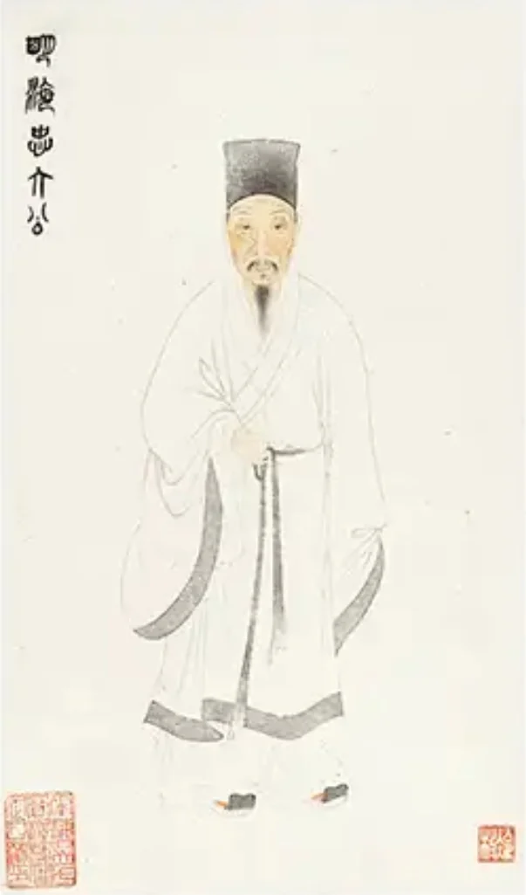
Portrait of Hai Rui, attributed to the Qing court painter Leng Mei, painted long after Hai Rui's death. Public domain, Wikimedia Commons.
Hai Rui was an official famous for his honesty and courage.
In a memorial (a formal written report to the emperor), he told Shizong he had been a disaster for the country.
Few officials dared to criticize an emperor so directly.
Court portrait of Shenzong, the Wanli emperor, hanging scroll, Ming dynasty. National Palace Museum, Taipei. Public domain, Wikimedia Commons.
The Wanli emperor (r. 1573–1620) was intelligent but refused to meet his officials for years at a time.
Memorials piled up unopened, and empty posts went unfilled.
With no chancellor, no one else had the authority to run the government.
Sources: Ebrey, Ch. 14, p. 230. The link between the missing chancellor and the paralysis is this lecture's inference from the textbook's account.
Reading Guide · Review Question 3
Reading Guide · Review Question 3
Review Question 3
Analyze the structural weaknesses of the Ming imperial institution following the abolition of the chancellorship. How did the changing nature of subsequent emperors contribute to the rise of eunuch power?
The Founders Also Looked North to the Steppe and Out to Sea
The founders' armies and fleets reached far beyond China's borders.
The next lecture follows Ming ships across the Indian Ocean and Ming armies onto the steppe.
It ends with silver arriving from the other side of the world.
Sources: Ebrey, Ch. 14, pp. 230–234.
The Ming Great Wall at Jinshanling, a stretch rebuilt in the later 1500s. Photo: Severin.stalder. CC BY-SA 3.0, Wikimedia Commons.
Beyond the lecture
Pierian Spring
Optional Independent Study
Three short side trips for curious readers. Nothing here is needed for the Reading Guide or the review questions.
"A little learning is a dang'rous thing; Drink deep, or taste not the Pierian spring."Alexander Pope, An Essay on Criticism, 1711
Pierian Spring · Princes and the southwest · 1368–1390s
PS: Taizu Sent His 26 Sons to Fiefs and Pushed the Empire into the Southwest
Taizu sent his sons out of the capital and barred them and their descendants from exams and office.
They lived on government stipends and held only military posts.
In the 1380s the Ming took Yunnan and created Guizhou province.
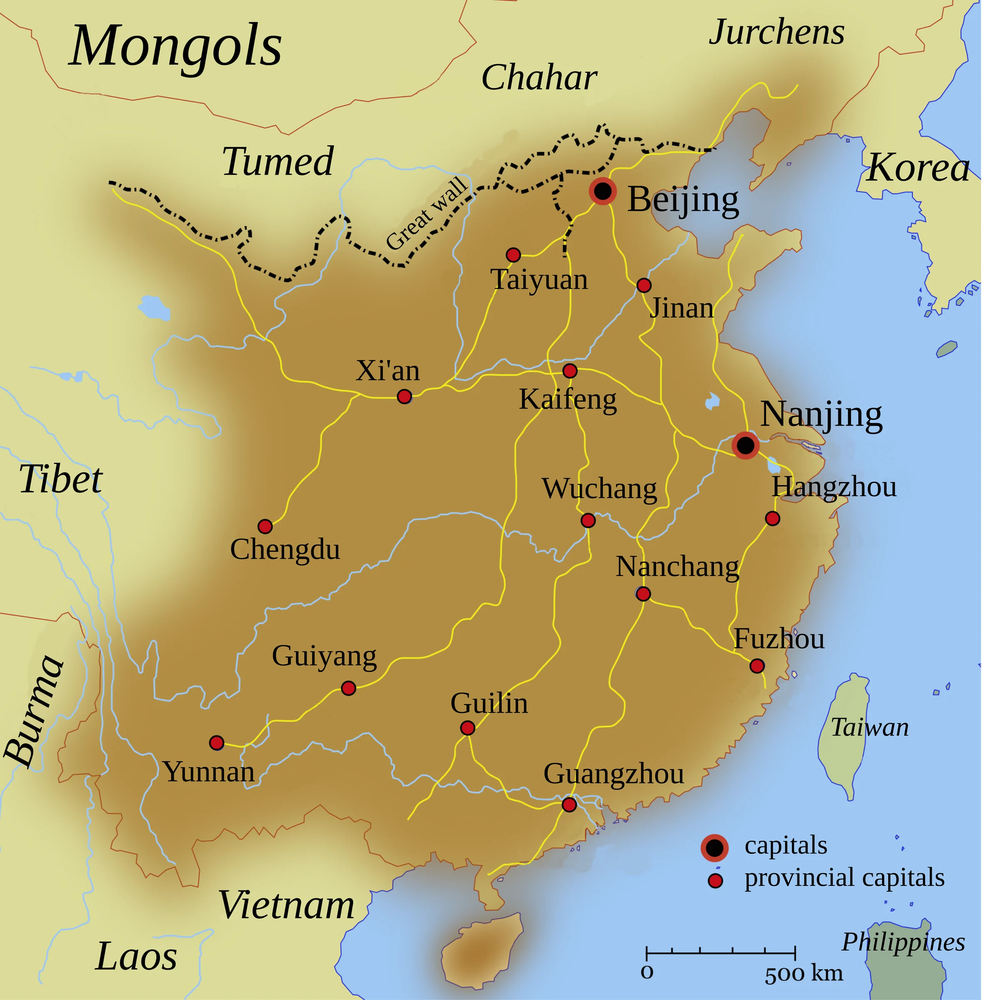
The Ming empire around 1580, with its provinces. Yunnan and Guizhou are in the southwest. Map: Michal Klajban et al. CC BY-SA 3.0 CZ, Wikimedia Commons.
Sources: Ebrey, Ch. 14, p. 229.
Pierian Spring · Mongols in the Ming · 1368–1398
PS: Taizu Told the Mongols in His Realm That They Were "Our Children"
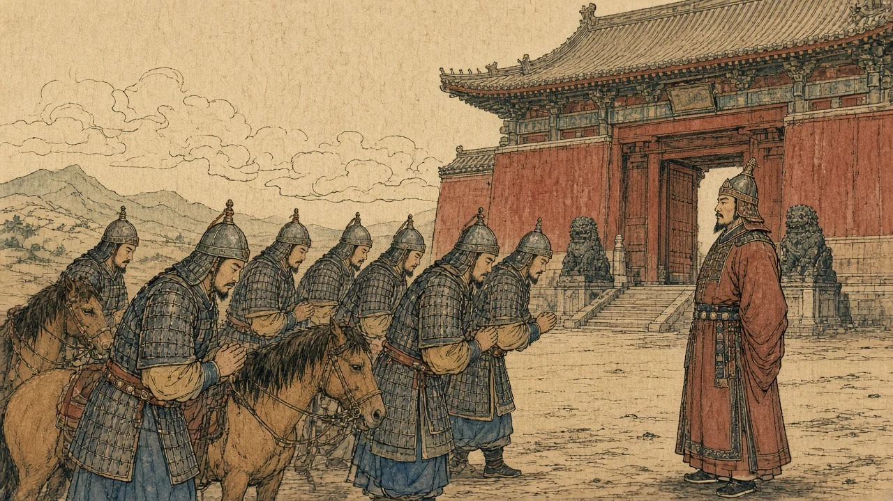
AI-generated illustration in a Ming woodblock-print style, made for this deck: mongol soldiers in helmets and armor bow before a Ming official at a red palace gate. An interpretation, not a historical source.
Many Ming soldiers were Mongols serving in Mongol units.
Taizu accepted that the Yuan had once held the Mandate of Heaven.
He promised talented Mongols and Inner Asians appointments to office.
Those Mongols and Inner Asians who live on our land also are our children, and those among them who possess talent and ability also shall be selected and appointed to office by us.Ming Taizu, quoted in Ebrey, p. 229, from Mote, Imperial China, p. 560
Sources: Ebrey, Ch. 14, p. 229, citing F. W. Mote, Imperial China, 900–1800, p. 560.
Pierian Spring · Names · Ming dynasty
PS: Reign Names and Temple Names Explain Why One Man Has Three Names
Zhu Yuanzhang was his personal name.
Hongwu was his reign name, which he never changed, starting a Ming custom.
Taizu was the temple name used in sacrifices after his death.
Seated portrait of Ming Taizu (the same portrait as slide a). National Palace Museum, Taipei. Public domain, Wikimedia Commons.
Sources: Ebrey, Ch. 14, p. 228.
Sources and image credits
The Stories in This Deck Rest on These Sources
Textbook
Patricia Buckley Ebrey et al., course textbook, Chapter 14, "The Ming Empire in China (1368–1644)," pp. 227–246. All page references in this deck are to this chapter.
F. W. Mote, Imperial China, 900–1800 (Harvard University Press, 1999), p. 560, as cited in the textbook, p. 229.
Images (real)
Slides a, ll: A Seated Portrait of Ming Emperor Taizu, National Palace Museum, Taipei. Public domain, Wikimedia Commons.
Slide g: Seated portrait of Ming Taizu, version 4, National Palace Museum, Taipei. Public domain, Wikimedia Commons.
Slide h: Ming fish-scale land register, Anhui Museum. Photo: 猫猫的日记本. CC BY-SA 3.0, Wikimedia Commons.
Slide o: Portrait of Empress Ma, National Palace Museum, Taipei. Public domain, Wikimedia Commons.
Slide r: Seated portrait of Ming Chengzu, National Palace Museum, Taipei. Public domain, Wikimedia Commons.
Slide t: Yongle dadian page, copy of 1562–1567, Chester Beatty Library, Dublin. Public domain, Wikimedia Commons.
Slide v: Portrait of an official in front of the Forbidden City, attributed to Zhu Bang, British Museum 1881,1210,0.87. Public domain, Wikimedia Commons.
Slide w: Forbidden City from Jingshan. Photo: Gary Todd, 1991. CC0, Wikimedia Commons.
Slide x: Modern course of the Grand Canal. Map: Ian Kiu. CC BY 3.0, Wikimedia Commons.
Slide aa: The Xuande Emperor's Pleasures (detail), Palace Museum, Beijing. Public domain, Wikimedia Commons.
Slide ee: Portrait of Hai Rui, attributed to Leng Mei. Public domain, Wikimedia Commons.
Slide ff: Court portrait of the Wanli emperor, National Palace Museum, Taipei. Public domain, Wikimedia Commons.
Slide hh: The Great Wall at Jinshanling. Photo: Severin.stalder. CC BY-SA 3.0, Wikimedia Commons.
Slide jj: Ming Empire around 1580. Map: Michal Klajban et al. CC BY-SA 3.0 CZ, Wikimedia Commons.
Images (AI-generated)
Scene images on slides b, c, d, e, i, j, k, l, m, n, q, s, u, bb, cc, dd and kk are AI-generated interpretations made for this deck. They are not historical sources.
×
Novice
A novice is a beginner in a monastery who lives with the monks and learns the rules but has not yet taken full vows as a monk.
×
White Lotus Society
The White Lotus Society was a popular religious movement. Its teachings combined the Manichaean idea that good and evil cannot mix with the hope that Maitreya, the future Buddha, would soon bring his paradise to earth to relieve human suffering.
The Red Turbans were affiliated with it (Ebrey, p. 228).
×
Reign name and temple name
A reign name was the title of an emperor's years on the throne. Zhu used Hongwu for all thirty years of his reign, and later Ming emperors followed his example.
A temple name, like Taizu, was given after death and used in the sacrifices offered to the emperor (Ebrey, p. 228).
×
Chancellor
The chancellor was the highest official in the government. He coordinated the ministries and handled business for the emperor, so the emperor did not have to manage every department himself.
Taizu abolished the post in 1380 (Ebrey, p. 229).
×
Fief
A fief was a territory assigned to a prince to live in. Taizu's sons lived on government stipends in their fiefs, away from the capital, and could hold only military posts (Ebrey, p. 229).
×
Hanlin Academy
The Hanlin Academy was an institution of top scholars at court, usually men who had done very well in the examinations. They drafted documents and served the emperor as writers and advisers.
Because they were scholars rather than experienced administrators, they had prestige but little practice running government business (Ebrey, p. 230).